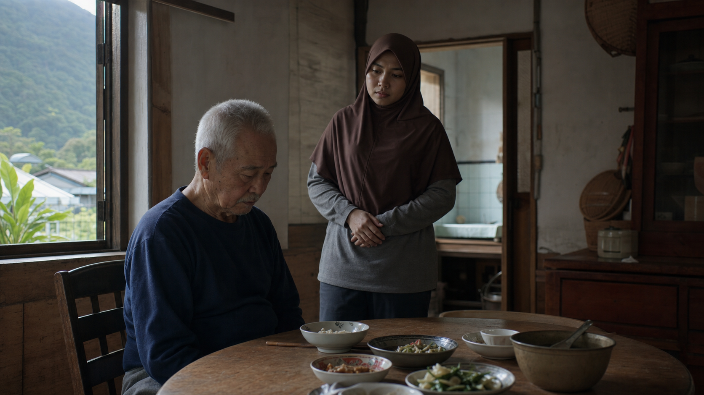

已更新
9:415G 88%
CareBridge AI照護協作平台

早餐食量20%
呼吸狀態偏急促
AI 風險提醒中高風險
食慾下降、呼吸急促與行走不穩同時出現，建議立即完成 AI 風險判讀。
🍚
早餐未完成08:10 · Siti
›🚶
行走不穩09:35 · AI flagged
›建立異常事件
用你熟悉的方式描述狀況，CareBridge 會協助整理成可通報資訊。
AI 風險判讀
AI 照護助手
可以用母語詢問照護問題。CareBridge 會提供安全建議，但不提供醫療診斷。
CareBridge AI 不是醫療診斷工具。如出現急性惡化或生命危險，請立即聯絡當地緊急服務或醫療專業人員。
你好，我可以協助你整理狀況、判斷風險並準備通報。你想問什麼？
智慧通報
AI 已整理成家屬與長照窗口可以快速理解的摘要。
父親目前狀況摘要
症狀食慾下降、呼吸急促、行走不穩
風險中高風險，建議安排醫療評估
建議聯繫家屬，持續觀察意識與呼吸，安排診所或醫療評估。
家屬兒子 · 台北
長照機構花蓮社區照護站
個管師Long-term care case manager
通知預覽
CareBridge AI：林先生今日出現食慾下降、呼吸急促與行走不穩。AI 判定中高風險，建議儘速聯繫照顧者並安排醫療評估。
照護紀錄
把日常照護轉成長期可追蹤的脈絡。
⚠
中高風險事件
09:42 · 食慾下降、呼吸急促、行走不穩。已通知家屬。
🍚
早餐食量偏低
08:10 · 粥只吃約 20%，喝水正常。
💊
高血壓用藥
07:40 · 已服藥，無嘔吐。
🌙
昨夜睡眠
06:30 · 睡眠約 5.2 小時，比平常少。
健康趨勢
AI 分析近兩週資料，找出不容易被單日觀察發現的變化。
AI 趨勢提醒
近兩週食量與睡眠都有下降趨勢，且今日出現呼吸急促與行走不穩，建議提高追蹤頻率。
-32%食量
-18%睡眠
-1.4kg體重
近兩週食量14 days
睡眠時數avg 5.6h